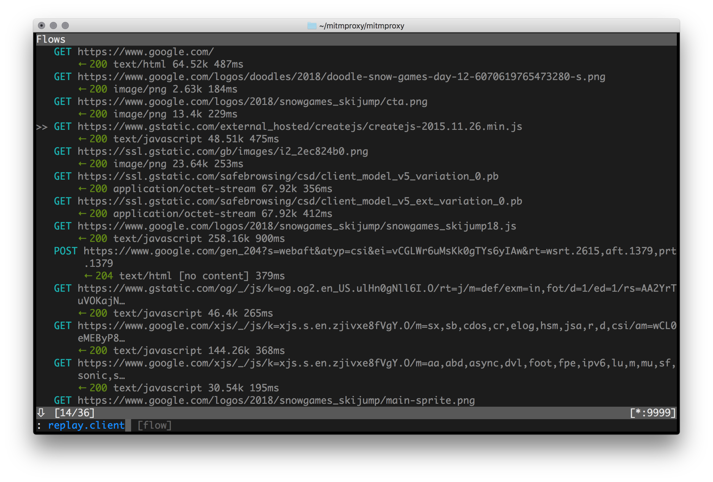
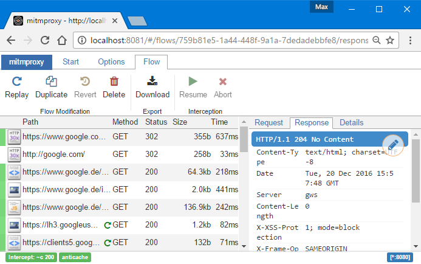
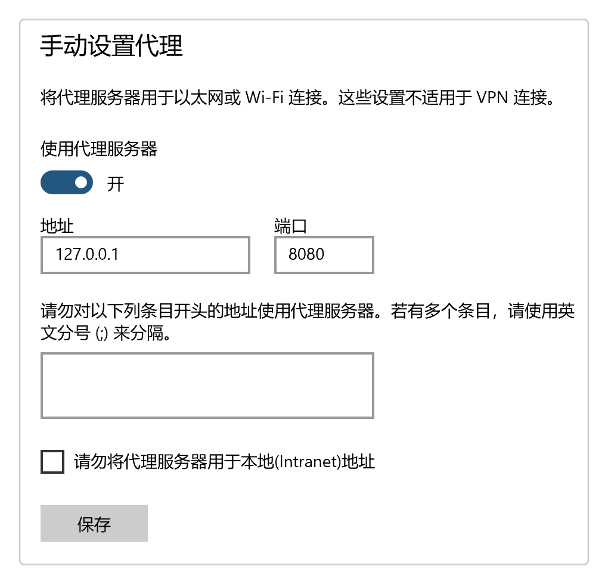
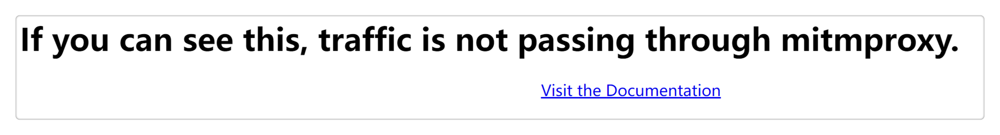
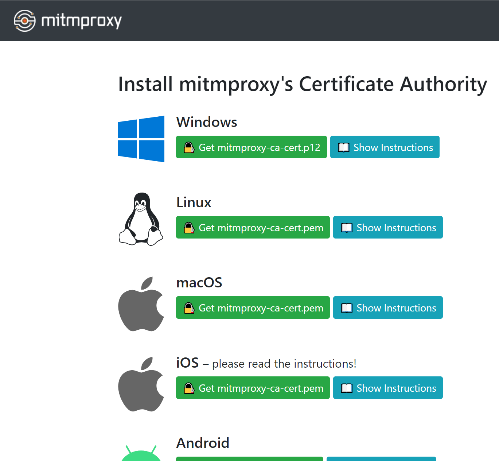
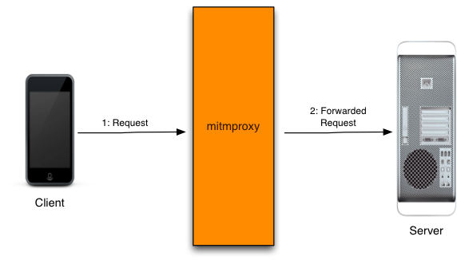
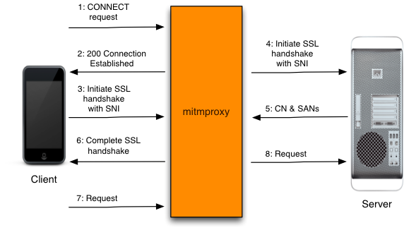
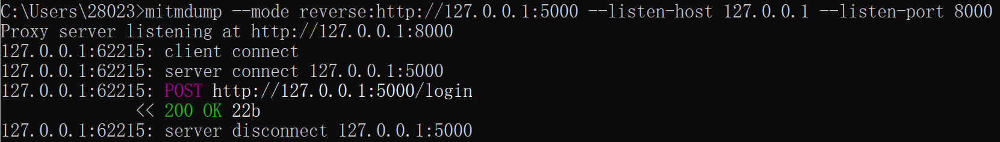
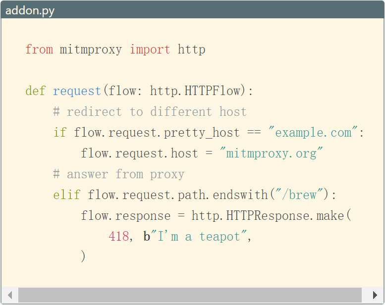

本书作者：测试开发刚哥，文章版权归个人所有，未经授权请勿转载。
Man In The Middle
mitm 是 Man In The Middle 的首字母缩写，意思是位于中间的人，表明 mitmproxy 是一个代理，可以拦截请求，实现网络抓包。知名的网络抓包工具有 Fiddler、Charles、HttpWatch、WireShark、BurpSuite 和 Postman 等，mitmproxy 相对来说，没有这么高的知名度，它相比于以上工具的独特优势是，它提供了 Python API，可以编写 Python 代码对网络请求进行流量录制，从而收集接口信息以及转化为接口自动化用例等。mitmproxy 官方文档不但有 mitmproxy 工具使用介绍，还有代理实现原理，对我们学习掌握网络知识有很大帮助。
安装与使用
pip 安装
pip install mitmproxy
mitmproxy 是 Python 开发的，用 pip 就能安装成功。官方给出了二进制安装包等方法，我觉得作为一款用 Python 开发的工具，用 pip 直接安装是更 Pythonic 的。
命令启动
可以通过 3 种命令启动 mitmproxy：
-
mitmproxy 控制台

-
mitmweb 网页

-
mitmdump 命令行
它们的内容都是一样的，只是 UI 不一样而已。
手动设置代理
打开以后 mitmproxy 默认会监听http://localhost:8080，需要设置下代理，把代理服务器设置为这个地址。
Windows 可以这样设置：

设置后一定要记得点击保存按钮，否则代理不会生效。
实际上，Charles 等网络抓包工具会自动配置代理，而 mitmproxy 需要手动设置代理，开发团队的解释是因为浏览器版本和配置经常会变化，所以他们建议在网上根据环境搜索方法手动设置。
下载证书
访问http://mitm.it/，如果代理配置没有生效，打开后会是这个界面：

正常的话，会出现证书下载页面：

根据平台选择相应证书安装就 OK 了。
使用
mitmproxy 更其他抓包工具用法类似。
官方用视频演示了 mitmproxy 如何使用：
https://docs.mitmproxy.org/stable/mitmproxytutorial-userinterface/
并且介绍了 5 种运行模式：
https://docs.mitmproxy.org/stable/concepts-modes/
读者可以自行阅读下。
mitmproxy 工作原理

- 客户端（本机）连接代理服务器（http://127.0.0.1:8080），代理服务器连接服务器。
- 客户端给代理服务器发请求，代理服务器把请求发送到服务器。
所有请求经过 mitmproxy，就可以实现请求拦截。
对于 HTTP 来说，直接借助 mitmproxy 传递请求就可以。而对于 HTTPS 来说，有个 SSL/TLS 安全认证，必须安装证书，服务器才会认为 mitmproxy 的请求是可信任的，请求才会成功传递。

HTTPS 的代理过程就要复杂很多，客户端先跟 mitmproxy 建立连接（12 步），然后进行安全认证（36 步），最后传递请求（7~8 步）。
反向代理
假设在本机使用 FastAPI 启动了个 Mock 服务，地址为http://127.0.0.1:5000，通过Postman调接口，怎么使用mitmproxy来拦截请求呢？这就需要用到反向代理。
首先以反向代理模式运行 mitmproxy，服务器端口为 5000，监听端口为 8000：
mitmproxy --mode reverse:http://127.0.0.1:5000 --listen-host 127.0.0.1 --listen-port 8000
然后把请求http://127.0.0.1:5000/login里面的5000端口改成8000，访问：
http://127.0.0.1:8000/login
就能在 mitmproxy 看到抓到请求了：

这样就能在本地使用 Mock 服务来调试拦截请求的 Python 代码了。
反向代理，不需要在本机手动设置代理。
Python API
Python API 是 mitmproxy 的特色功能：

能够在 Python 代码中对拦截的请求进行处理。
addons 提供了很多 hook 函数，比如 request：
"""
Basic skeleton of a mitmproxy addon.
Run as follows: mitmproxy -s anatomy.py
"""
from mitmproxy import ctx
class Counter:
def __init__(self):
self.num = 0
def request(self, flow):
self.num = self.num + 1
ctx.log.info("We've seen %d flows" % self.num)
addons = [
Counter()
]
response：
"""Add an HTTP header to each response."""
class AddHeader:
def __init__(self):
self.num = 0
def response(self, flow):
self.num = self.num + 1
flow.response.headers["count"] = str(self.num)
addons = [
AddHeader()
]
启动时加上-s参数指定脚本：
mitmdump -s ./anatomy.py
代码就会在请求拦截时生效了。
更多 hook 函数请参考官方说明：
https://docs.mitmproxy.org/stable/api/events.html
这里就不再详细说明了。
而关于如何使用 mitmproxy 录制流量自动生成自动化用例的部分，我会开发完成后集成到 tep 新版本中，届时再做介绍，敬请期待。
参考资料：
mitmproxy 官方文档 https://docs.mitmproxy.org/stable/